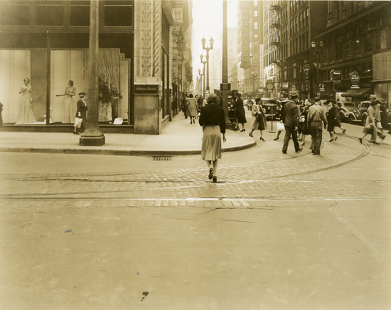
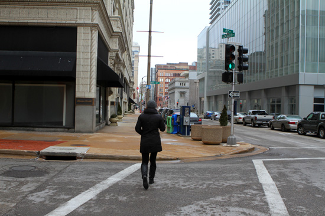
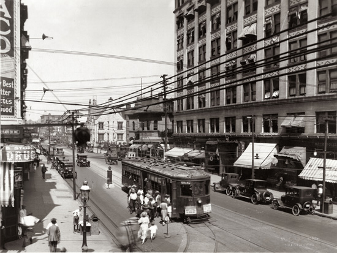
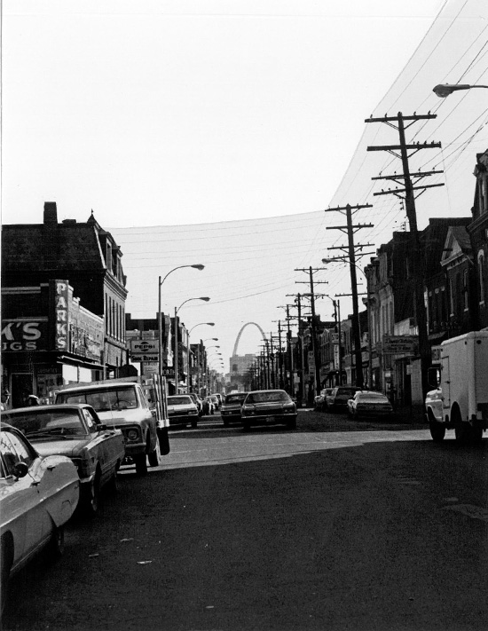
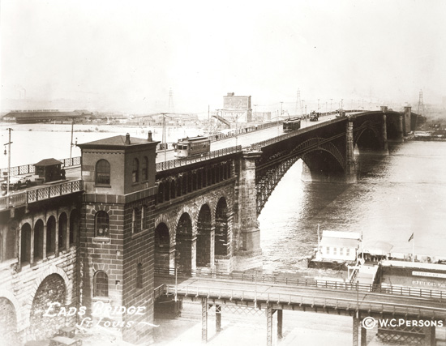
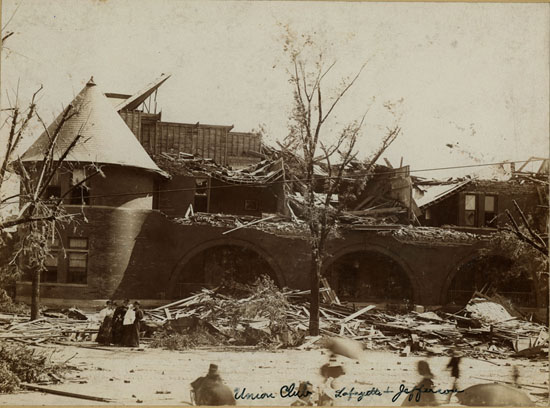
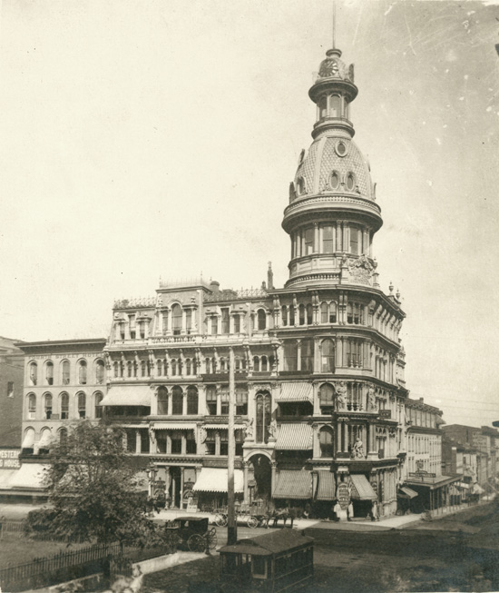
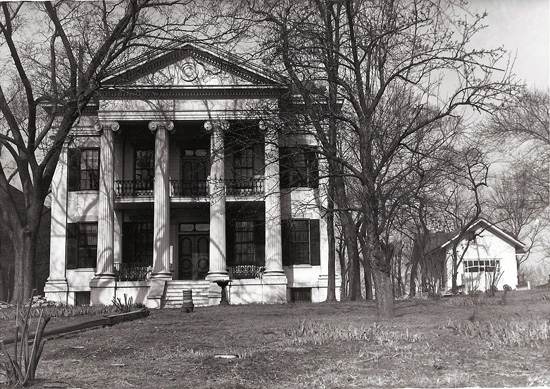
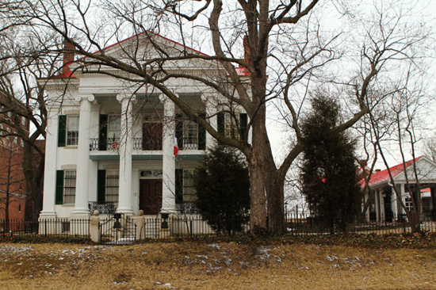

6th and Locust A woman crosses the street in 1940, and the same scene 74 years later. The historic photo is from 1940 and was taken by Richard Moore.

Grand at Olive Looking north from Grand at Olive. The historic photo is from 1921 and was taken by W.C. Persons.

14th Street at St. Louis Ave. Looking south from 14th Street at St. Louis Ave. The historic photo is from the early-to-mid 1970s.

Eads Bridge Two views of the Eads Bridge. The historic photo is from 1920 and was taken by W.C. Persons.

Lafayette and Jefferson In the historic photo, the Union Club stands partially demolished after a tornado in 1896.

4th and Market In 1876, the McLean Building stood at the northeast corner of 4th and Market. Historic photo by Emil Boehl.


Chatillon-DeMenil Mansion The undated historic photo is by William G. Swekosky.
Historic photos: 14th Street photo provided by Old North St. Louis Restoration Group; Chatillon DeMenil House photo provided by Landmarks Association of St. Louis. All other photos provided by Missouri History Museum.